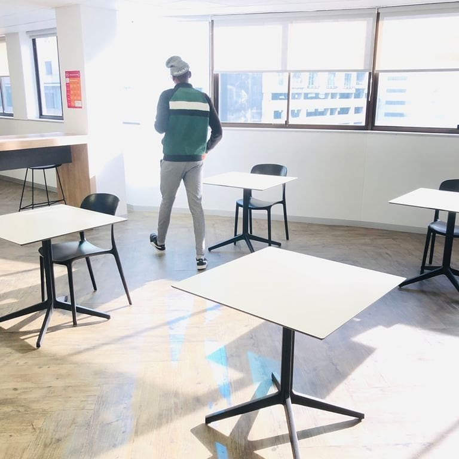

Mentioned on my cover, my name is Esona Gilikidi and situated in a local town known as
Khayelitsha. Describing myself I
would say that I'm an active person who enjoys sports and traveling when
I'm going
out. Going out, I like to hike if
time agrees on the side and as sport on the that hand, later you will notice my cv
and it'll also tell you that I'm into
soccer and basketball. Between the 2, soccer prefer to follow up on it
and do read ups as for basketball I perticipate in it.
As you can see, this is my personal website. I am currently am in a programme that offers leanership in
Website and
Application programming. In that I would aslo describe myself as a person who can
adapt easy to dfferent situations,
I love learning something new, especially if it benefit in education. During
my extra time, I read up on online articles,
spend time catching up on my studies. Not only I am doing this
coding learnership but am continuing my studies at a
collage located in Rondeboach and is known as
IIE Versity Collage
One thing I would admire myself about is the quick to adapt to different situations. Like mentioned earlier on, I am that guy who loves learning new things, skills, knowledge. So adaptation is much easy for me as I become eager to learn this. In terms of education, stated I am in an institution and there I am studying the world of finance. Future I wish to study Accounting archieveing qualifications for it, currently am doing a business management and accounting study to archieve my desired qualification. Reason for choosing that path, people around close to me made me realise how good I can be towards money. In the coding department, I learned it because I always had a want to learn something; a portion in the 'IT' feild. The bootcamp was an opportunity knocking on my door so I decided to go for it, which that in the end woke a passion in my I never thought I had Coding. Now here I am doing my porfolio, show casing the skill I recently learned during my time in the bootcamp.
